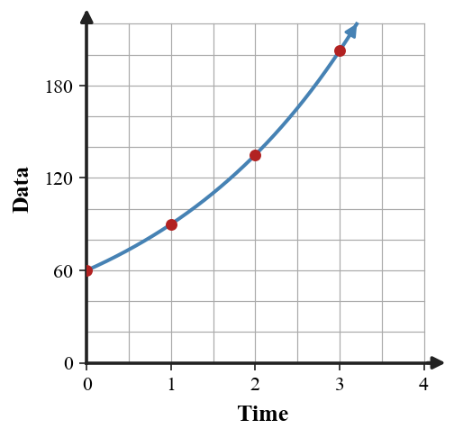
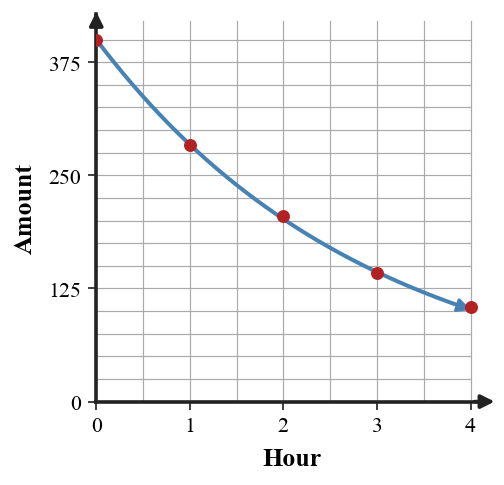

Mathematical idea: An exponential model is useful when data follow an approximate repeated multiplier, not necessarily a perfect pattern.
Today you will estimate multipliers from data, write exponential models, make predictions, and discuss fit. You will also decide when a model is reasonable and when it has limitations.
Learning Target: Students will create and analyze exponential models using real-world data.
I can statements
This is a long-range preview for future lessons. Do not solve it today. Instead, annotate it individually. Circle anything familiar, underline symbols or directions that seem important, and write notes about what information you think will be needed later.
As you annotate, ask yourself: What parts (words, symbols, graphs) do you KNOW? What parts look FAMILIAR? What parts look like jibberish?
Design a small real-world data set with five points that could reasonably be modeled exponentially. Then write a model and make one near-term prediction.
Directions
Read the introduction aloud with a partner or in a small group. As you read, annotate the text by highlighting important ideas, circling key vocabulary, and writing short notes about connections, questions, or predictions in the margins.
A data table often gives the starting value at time 0 and several later outputs. The multiplier can be estimated by comparing consecutive outputs or by looking for an average repeated ratio.
Real data usually include measurement error, rounding, or changing conditions. That means the ratios may be close to each other without being exactly the same, so model fit requires judgment.
A model is usually safer for near-term predictions than for far-away predictions. When you predict far outside the data range, small errors in the multiplier can grow into large errors.
In this section, you will use real-world data tables, scatter plots, equations, predictions, and residual reasoning. The goal is to explain both what the model captures and what it does not capture.
Examples of exponential data include viral sharing, population change, compound growth, medicine concentration, and depreciation. Each context should give meaning to the starting value, multiplier, and prediction.
Stop and Discuss
To build a model from data, identify the starting value and estimate the multiplier.
| Time | 0 | 1 | 2 | 3 |
|---|---|---|---|---|
| Data | 60 | 90 | 135 | 202.5 |
| Ratio | 1.5 | 1.5 | 1.5 |
The model is $D(t)=60(1.5)^t$.

Context: If $t$ is days and $D(t)$ is views, the multiplier 1.5 means the views are multiplied by 1.5 each day.
Identify the starting value and approximate multiplier from each data table.
| Time | 0 | 1 | 2 | 3 |
|---|---|---|---|---|
| Data A | 80 | 100 | 125 | 156.25 |
| Data B | 600 | 420 | 294 | 205.8 |
Identify the starting value and approximate multiplier from each data table.
| Time | 0 | 1 | 2 | 3 |
|---|---|---|---|---|
| Data A | 40 | 52 | 67.6 | 87.88 |
| Data B | 900 | 720 | 576 | 460.8 |
Stop and Discuss
The table shows the number of views for a tutorial video.
| Day | 0 | 1 | 2 | 3 | 4 |
|---|---|---|---|---|---|
| Views | 60 | 90 | 135 | 202.5 | 303.75 |
The table shows the number of times a post has been shared.
| Day | 0 | 1 | 2 | 3 |
|---|---|---|---|---|
| Shares | 32 | 56 | 98 | 171.5 |
Stop and Discuss
Real data can be close to exponential even when the ratios are not exactly equal.
| Hour | 0 | 1 | 2 | 3 | 4 |
|---|---|---|---|---|---|
| Amount (mg) | 400 | 284 | 205 | 142 | 104 |
| Approx. ratio | 0.71 | 0.72 | 0.69 | 0.73 |
A reasonable model might use a multiplier near 0.71, such as $M(t)=400(0.71)^t$.

Context: The model captures the decay trend, but it may not predict perfectly because real measurements vary.
The amount of a chemical in a sample is recorded hourly.
| Hour | 0 | 1 | 2 | 3 |
|---|---|---|---|---|
| Amount (mg) | 800 | 560 | 392 | 274.4 |
The amount of medicine in a body is recorded hourly.
| Hour | 0 | 1 | 2 | 3 |
|---|---|---|---|---|
| Amount (mg) | 300 | 210 | 147 | 102.9 |
Stop and Discuss
A model from two data points gives $P(t)=150(1.4)^t$. Another student suggests $P(t)=150+60t$ because the first increase is 60.
A model from two data points gives $Q(t)=100(1.6)^t$. Another student suggests $Q(t)=100+60t$ because the first increase is 60.
Stop and Discuss
You can create an exponential model from data by finding the starting value and estimating a repeated multiplier.
A model such as $y=ab^x$ can be used to make predictions, but the prediction should be interpreted in context.
A common error is to force exact exponential behavior onto data that only approximately follows a trend.
Strong understanding means you can explain the model, make a near-term prediction, and name a limitation of the model fit.
Look back at the future task. Do not solve it yet. Highlight one part that makes more sense now than it did at the beginning. Circle one part that still feels unfamiliar. Write one sentence about what representation you would look at first.
Identify the starting value and approximate multiplier from each data table.
| Time | 0 | 1 | 2 | 3 |
|---|---|---|---|---|
| Data A | 100 | 120 | 144 | 172.8 |
| Data B | 500 | 400 | 320 | 256 |
The table shows the number of views for a video.
| Day | 0 | 1 | 2 | 3 | 4 |
|---|---|---|---|---|---|
| Views | 80 | 120 | 180 | 270 | 405 |
Write an exponential model and predict day 6.
What is one idea about exponential modeling with data you understand better now than at the start of class? Write at least one complete sentence.
What is one thing about exponential modeling with data you still want to understand or practice? Be specific — name the idea, not just "everything."